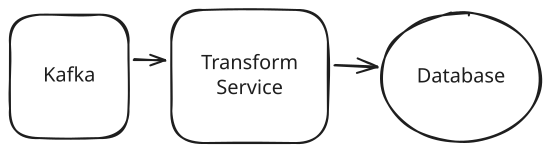
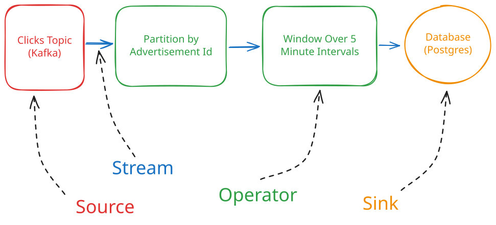
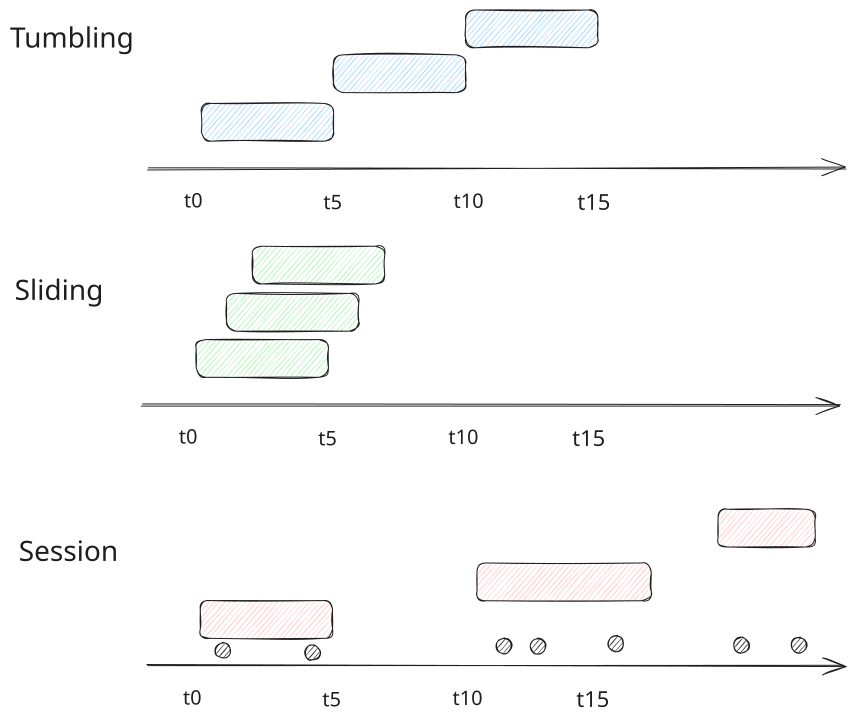
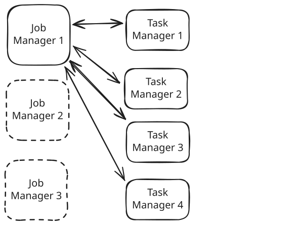
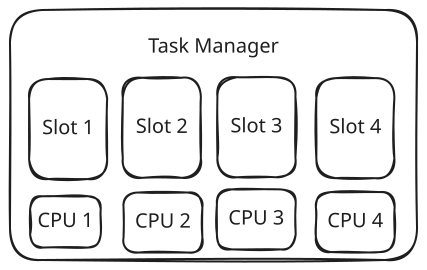

Key Technologies
Flink
Learn about how you can use Flink to solve a large number of problems in System Design.
Many system design problems will require stream processing. You have a continuous flow of data and you want to process, transform, or analyze it in real-time.
Stream processing is actually hard and expensive to get right. Many problems that seem like stream processing problems can actually be reduced to batch processing problems where you'd use something like Spark or (if you're ancient enough) Hadoop.
Before embarking on a stream processing solution, ask yourself the critical question: "do I really need real-time latencies?". For many problems, the answer is no and the engineers after you will thank you for saving them the ops headache.
The most basic example of this might be a service reading clicks from a Kafka topic, doing a trivial transformation (maybe reformatting the data for ingestion), and writing to a database. Easy.

Simple Kafka Stream Processing
But things can get substantially more complex from here. Imagine we want to keep track of the count of clicks per user in the last 5 minutes. Because of that 5 minute window, we've introduced state to our problem. Each message can't be processed independently because we need to remember the count from previous messages. While we can definitely do this in our service by just holding counters in memory, we've introduced a bunch of new problems.
- As one example of a problem, if our new service crashes it will lose all of its state: basically the count for the preceding 5 minutes is gone. Our service could hypothetically recover from this by re-reading all the messages from the Kafka topic, but this is slow and expensive.
- Or another problem is scaling. If we want to add a new service instance because we're handling more clicks, we need to figure out how to re-distribute the state from existing instances to the new ones. This is a complicated dance with a lot of failure scenarios!
- Or what if events come in out of order or late! This is likely to happen and will impact the accuracy of our counts.
And things only get harder from here as we add complexity and more statefulness. Fortunately, engineers have been building these systems for decades and have come up with useful abstractions. Enter one of the most powerful stream processing engines: Apache Flink.
Flink is a framework for building stream processing applications that solves some of the tricky problems like those we've discussed above and more. While we could talk about Flink for days, in this deep dive we're going to focus on two different perspectives to understanding Flink:
- First, we're going to talk about how Flink is used. There's a good chance you'll encounter a stream-oriented problem in your interview and Flink is a powerful, flexible tool for the job when it applies.
- Secondly, you'll learn how Flink works, at a high-level, under the hood. Flink solves a lot of problems for you, but for interviews it's important you understand how it does that so you can answer deep-dive questions and support your design. We'll cover the important bits.
Let's get to it!
Basic Concepts
To start, we need to understand the basic concepts of Flink so we have some terminology to work with through the rest of our discussion.
Flink is a dataflow engine. This means it's built around the idea of a dataflow graph. A dataflow graph is a directed graph of nodes and edges describing a computation. The nodes are the operations that are being performed on the data, and the edges are the streams of data that are being passed between the operations.
A basic dataflow graph might look like this:

Basic Dataflow
In Flink, the nodes are called operators and the edges are called streams. We give special names to the nodes at the beginning and end of the graph: sources and sinks. As a developer, your task is to define this graph and Flink takes on the work of arranging the resources to execute the computation.
Sources/Sinks
Sources and sinks are the entry and exit points for data in your Flink application.
-
Sources read data from external systems and convert them into Flink streams. Common sources include:
- Kafka: For message queues
- Kinesis: For AWS streaming data
- File systems: For batch processing
- Custom sources: For specialized integrations
-
Sinks write data from Flink streams to external systems. Common sinks include:
- Databases: MySQL, PostgreSQL, MongoDB, etc.
- Data warehouses: Snowflake, BigQuery, Redshift
- Message queues: Kafka, RabbitMQ
- File systems: HDFS, S3, local files
While Flink supports a wide variety of sources and sinks, the vast majority of designs we see in interviews start from Kafka. This is convenient because Kafka is already going to force you to think about how your data is arranged into topics and partitions which will be relevant for reasoning about your Flink application.
While you can definitely build batch processing applications with Flink, I wouldn't recommend it in an interview setting. It's technically true but less well-understood by interviewers and maintaining optimality is a lot more difficult.
Streams
If sources, sinks, and operators are the nodes, Streams are the edges in your dataflow graph. A stream is an unbounded sequence of data elements flowing through the system. Think of it like an infinite array of events:
// Example event in a stream
{
"user_id": "123",
"action": "click",
"timestamp": "2024-01-01T00:00:00.000Z",
"page": "/products/xyz"
}Flink gives us tools to slice, transform, aggregate, recombine, and otherwise process streams.
Streams in Flink are not necessarily append-only logs like they are with Kafka. There are no offsets or expectations of persistence in the stream abstraction. In Flink, durability is managed by checkpoints which the system periodically creates. We'll get into those in more detail on checkpointing later.
Operators
An operator is a (potentially) stateful transformation that processes one or more input streams and produces one or more output streams. Operators are the building blocks of your stream processing application. Common operators include:
- Map: Transform each element individually
- Filter: Remove elements that don't match a condition
- Reduce: Combine elements within a key
- Window: Group elements by time or count
- Join: Combine elements from two streams
- FlatMap: Transform each element into zero or more elements
- Aggregate: Compute aggregates over windows or keys
Special note here for those familiar with map/reduce is that Flink operators can serve similar purposes to both mappers and reducers in MapReduce, but the execution model is quite different. Flink processes records one at a time in a streaming fashion, rather than in batches like MapReduce.
Here's a simple example of operators in action:
DataStream<ClickEvent> clicks = // input stream
clicks
.keyBy(event -> event.getAdId())
.window(TumblingEventTimeWindows.of(Time.minutes(5)))
.reduce((a, b) -> new ClickEvent(a.getAdId(), a.getCount() + b.getCount()))What this code does is:
- Takes the input stream of clicks and partitions them by adId using the keyBy operator, creating a KeyedStream
- Applies a tumbling window of 5 minutes to the KeyedStream, which groups elements with the same key that fall within the same 5-minute time period
- Applies a reduce function to each window. This function combines pairs of ClickEvents by creating a new ClickEvent that keeps the adId and adds the count values together
The result is a stream that emits aggregated click counts per advertisement at 5-minute intervals.
State
Flink Operators are stateful, meaning they can maintain internal state across multiple events. This is crucial for any non-trivial stream processing. For example, if you want to count how many times a user has clicked in the last five minutes, you need to maintain state about previous clicks (how many clicks have occurred and when).
This State needs to be managed internally by Flink in order for the framework to give us scaling and fault tolerance guarantees. When a node crashes, Flink can restore the state from a checkpoint and resume processing from there.
Flink provides several types of state:
- Value State: A single value per key
- List State: A list of values per key
- Map State: A map of values per key
- Aggregating State: State for incremental aggregations
- Reducing State: State for incremental reductions
Here's a simple example of using state to count clicks:
public class ClickCounter extends KeyedProcessFunction<String, ClickEvent, ClickCount> {
private ValueState<Long> countState;
@Override
public void open(Configuration config) {
ValueStateDescriptor<Long> descriptor =
new ValueStateDescriptor<>("count", Long.class);
countState = getRuntimeContext().getState(descriptor);
}
@Override
public void processElement(ClickEvent event, Context ctx, Collector<ClickCount> out)
throws Exception {
Long count = countState.value();
if (count == null) {
count = 0L;
}
count++;
countState.update(count);
out.collect(new ClickCount(event.getUserId(), count));
}
}What this code does is:
- Creates a ClickCounter class that extends KeyedProcessFunction which processes clicks keyed by a String (the userId), takes ClickEvent inputs, and produces ClickCount outputs
- Declares a ValueState<Long> field to store the count of clicks for each user
- In the open method, initializes this state with a descriptor that names the state "count" and specifies its type as Long
- In the processElement method (called for each input event):
- Retrieves the current count from state (or initializes to 0 if null)
- Increments the count
- Updates the state with the new count
- Outputs a new ClickCount object with the user ID and updated count
The end result of this state-based operator is it maintains an ongoing count of clicks for each user and emits an updated count every time a new click arrives. The important concept though is that we need to make sure the Flink framework knows about our state so that it can checkpoint and restore in the event of a failure.
Watermarks
In distributed stream processing systems, one of the biggest challenges is handling out-of-order events. Events can arrive late for various reasons:
- Network delays between event sources
- Different processing speeds across partitions
- Source system delays or failures
- Varying latencies in different parts of the system
Watermarks are Flink's solution to this problem. A watermark is essentially a timestamp that flows through the system alongside streaming data and declares "all events with timestamps before this watermark have arrived." As an example, you might receive the watermark that lets you know 5pm has passed at 5:01:15pm. This ensures we have sufficient time to process all data that may have been created at 4:59pm but processed late. And by processing watermarks alongside the rest of our streaming data, we can:
- Make decisions about when to trigger window computations
- Handle late-arriving events gracefully
- Maintain consistent event time processing across the distributed system
Watermarks are configured on the source of the stream. The watermark strategy tells Flink how long to wait for late events. Flink supports a number of watermark strategies, but you'll typically see two:
- Bounded Out-Of-Orderness: This tells Flink to wait for events that arrive up to a certain time after the event timestamp.
- No Watermarks: This tells Flink to not wait for any late events and process events as they arrive.
Interviewers like to see you thinking carefully about the implications of late and out-of-order events. While Bounded Out-Of-Orderness is common, most mission-critical systems will augment this with an offline true-up process to ensure that even very late data is eventually processed. For an example of this, see our Ad Click Aggregator problem breakdown.
Windows
The final concept we'll cover are Windows. A window is a way to group elements in a stream by time or count. This is essential for aggregating data in a streaming context. Flink supports several types of windows:
- Tumbling Windows: Fixed-size, non-overlapping windows
- Sliding Windows: Fixed-size, overlapping windows.
- Session Windows: Dynamic-size windows based on activity
- Global Windows: Custom windowing logic

Window Types
Based on the window type, Flink will emit a new value for the window when the window ends. If I've created a tumbling window of 5 minute duration and my input is clicks, Flink will emit a new value which includes all the clicks that occurred in the last 5 minutes every 5 minutes.
Windows can be applied to both keyed and non-keyed streams, though they're most commonly used with keyed streams. When applied to a keyed stream, windows are maintained independently for each key. This allows you to look at the window of data for a specific user, account, or other key.
Window choice can dramatically impact both the accuracy and performance of your streaming application. A tumbling window of 5 minute duration will emit once every 5 minutes. A sliding window of 5 minute duration with a 1 minute interval will emit every minute. It's worth reasoning backwards from the problem requirements to determine the least expensive window type that will give you the accuracy you need.
Windows work closely with watermarks to determine when to trigger computations and how to handle late events. You can also configure windows with allowed lateness to process events that arrive after the window has closed but before a specified grace period ends.
Basic Use
Ok so we got all the basic pieces in place. Let's walk through setting up a simple Flink application to process a stream of user clicks. We'll cover the essential operations and concepts you'd need in a real application.
Defining a Job
A Flink job starts with a StreamExecutionEnvironment and typically involves defining your source, your transformations, and your sink:
StreamExecutionEnvironment env = StreamExecutionEnvironment.getExecutionEnvironment();
// Define source (e.g., Kafka)
DataStream<ClickEvent> clicks = env
.addSource(new FlinkKafkaConsumer<>("clicks", new ClickEventSchema(), properties));
// Define transformations
DataStream<WindowedClicks> windowedClicks = clicks
.keyBy(event -> event.getUserId())
.window(TumblingEventTimeWindows.of(Time.minutes(5)))
.aggregate(new ClickAggregator());
// Define sink (e.g., Elasticsearch)
windowedClicks
.addSink(new ElasticsearchSink.Builder<>(elasticsearchConfig).build());
// Execute
env.execute("Click Processing Job");The code here should be very readable with the aforementioned concepts in mind. We're defining a source, a series of transformations (operators), and a sink. The source is a Kafka topic that we're reading from. The transformations are a series of operators that we're applying to the data. The sink is a Elasticsearch cluster that we're writing the results to.
Submitting a Job
Our next step is to submit this job to the Flink cluster to run. This is done by calling the execute method on the StreamExecutionEnvironment (which could be either a local cluster or a remote cluster). When we do this, Flink will:
- Generate a JobGraph: The Flink compiler transforms your logical data flow (DataStream operations) into an optimized execution plan.
- Submit to JobManager: The JobGraph is submitted to the JobManager, which serves as the coordinator for your Flink cluster.
- Distribute Tasks: The JobManager breaks down the JobGraph into tasks and distributes them to TaskManagers.
- Execute: The TaskManagers execute the tasks, with each task processing a portion of the data.
Sample Jobs
The nice thing about Flink is that simple to extremely sophisticated flows can be modelled with the same primitives. Instead of creating a host of new services to perform operations and track state, we can describe the entirety of our logic within a job. Let's look at two examples to make this clearer:
Basic Dashboard Using Redis
Here's a simple example of a dashboard that uses Redis to store the state of the counts.
DataStream<ClickEvent> clickstream = env
.addSource(new FlinkKafkaConsumer<>("clicks", new JSONDeserializationSchema<>(ClickEvent.class), kafkaProps));
// Calculate metrics with 1-minute windows
DataStream<PageViewCount> pageViews = clickstream
.keyBy(click -> click.getPageId())
.window(TumblingProcessingTimeWindows.of(Time.minutes(1)))
.aggregate(new CountAggregator());
// Write to Redis for dashboard consumption
pageViews.addSink(new RedisSink<>(redisConfig, new PageViewCountMapper()));Here we're using the same primitives we discussed earlier, but we're storing the results into Redis for dashboard consumption. This is showing off one of Flink's strengths: flexible sources and sinks allow us to use Flink as part of a larger system.
Fraud Detection System
Here's a slightly more sophisticated example of a fraud detection system that uses Flink to detect fraudulent transactions. Don't let the extra lines fool you, this should still be very readable.
DataStream<Transaction> transactions = env
.addSource(new FlinkKafkaConsumer<>("transactions",
new KafkaAvroDeserializationSchema<>(Transaction.class), kafkaProps))
.assignTimestampsAndWatermarks(
WatermarkStrategy.<Transaction>forBoundedOutOfOrderness(Duration.ofSeconds(10))
.withTimestampAssigner((event, timestamp) -> event.getTimestamp())
);
// Enrich transactions with account information
DataStream<EnrichedTransaction> enrichedTransactions =
transactions.keyBy(t -> t.getAccountId())
.connect(accountInfoStream.keyBy(a -> a.getAccountId()))
.process(new AccountEnrichmentFunction());
// Calculate velocity metrics (multiple transactions in short time)
DataStream<VelocityAlert> velocityAlerts = enrichedTransactions
.keyBy(t -> t.getAccountId())
.window(SlidingEventTimeWindows.of(Time.minutes(30), Time.minutes(5)))
.process(new VelocityDetector(3, 1000.0)); // Alert on 3+ transactions over $1000 in 30 min
// Pattern detection with CEP for suspicious sequences
Pattern<EnrichedTransaction, ?> fraudPattern = Pattern.<EnrichedTransaction>begin("small-tx")
.where(tx -> tx.getAmount() < 10.0)
.next("large-tx")
.where(tx -> tx.getAmount() > 1000.0)
.within(Time.minutes(5));
DataStream<PatternAlert> patternAlerts = CEP.pattern(
enrichedTransactions.keyBy(t -> t.getCardId()), fraudPattern)
.select(new PatternAlertSelector());
// Union all alerts and deduplicate
DataStream<Alert> allAlerts = velocityAlerts.union(patternAlerts)
.keyBy(Alert::getAlertId)
.window(TumblingEventTimeWindows.of(Time.minutes(5)))
.aggregate(new AlertDeduplicator());
// Output to Kafka and Elasticsearch
allAlerts.addSink(new FlinkKafkaProducer<>("alerts", new AlertSerializer(), kafkaProps));
allAlerts.addSink(ElasticsearchSink.builder(elasticsearchConfig).build());In this case we're looking for specific patterns that are correlated with fraud: velocity of transactions and specific sequences that are indicative of fraud. We create a stream of alerts and push it to two sinks: one to Kafka for consumption by other systems (maybe an automated system to deactivate an account) and one to Elasticsearch for querying. The net result is a whole system design in one Flink job!
How Flink Works
Now that you understand how to use Flink, let's dive into how it works under the hood. Flink's architecture is designed to provide exactly-once processing guarantees, even in the face of failures, while maintaining high throughput and low latency.
Cluster Architecture
Job Manager and Task Managers
Flink runs as a distributed system with two main types of processes:
- Job Manager is the coordinator of the Flink cluster. It's responsible for scheduling tasks, coordinating checkpoints, and handling failures. Think of it as the "supervisor" of the operation.
- Task Managers are the workers that execute the actual data processing. Each Task Manager provides a certain number of processing slots to the cluster.

Cluster Architecture
Job Managers are leader-based. This means that there is a single Job Manager that is responsible for coordinating the work in the cluster. High availability is achieved by deploying multiple Job Managers together and using a quorum-based mechanism (usually ZooKeeper) to elect a leader.
When you submit a job to Flink:
- The Job Manager receives the application and constructs the execution graph
- It allocates tasks to available slots in Task Managers
- Task Managers start executing their assigned tasks
- The Job Manager monitors execution and handles failures
Unless you're interviewing for a data-engineering heavy role, most interviewers aren't going to ask you about Flink cluster administration. It's enough for non-specialized roles to know that there are Job Managers which receive your job and coordinate the work in the cluster and Task Managers which execute the actual data processing.
Task Slots and Parallelism
Each Task Manager has one or more task slots, which are the basic unit of resource scheduling in Flink. A task slot is a unit of parallelism, and by default the number of task slots is equal to the number of cores on the machine (but this can be overridden to, for instance, use slots to represent chunks of memory or GPUs).
Slots reserve capacity on a machine for jobs and are frequently shared between operators of the same job — i.e. if you allocate 4 slots on a machine, and you have 2 operators that each need 2 slots, Flink will allocate 4 slots on that machine and run both operators on it.

Task Slots
Task slots serve several purposes:
- They isolate memory between tasks.
- They control the number of parallel task instances.
- They enable resource sharing between different tasks of the same job.
The net result is each Task Manager has a granular set of atomic resources that can be distributed between jobs and operators.
State Management
Placing job and task managers allows us to distribute work across a cluster, but it doesn't provide any durability guarantees. One of the biggest problems facing stream processing systems (especially stateful ones) is how to ensure that we can recover from failures without losing data. This is accomplished via Flink's state management system. Let's dive into how it works.
State Backends
We earlier talked about the abstraction that Flink offers developers for managing state. This API gives each job a way to store state alongside each operator either for the entire job, or for each key. The state itself is stored in a backend, which is a component that manages the storage and retrieval of state.
Flink offers different state backends for different use cases:
- Memory State Backend: Stores state in JVM heap
- FS State Backend: Stores state in filesystem
- RocksDB State Backend: Stores state in RocksDB (supports state larger than memory)
Most of the time you'll prefer using a memory state backend due to its performance, but if you're running an operator which needs to store substantially more state than the available memory you have options for how to page out to disk. Additionally, all of these backends can be configured to store state in remote storage (e.g. S3, GCS, etc.) if you're running Flink in a cloud environment.
Choice of state backend is crucial for production systems. Memory state backend is fast but limited by RAM, while RocksDB can handle terabytes of state but with higher latency.
Checkpointing and Exactly-Once Processing
State is awesome except when we need to recover from failure! This is where checkpointing becomes important. Flink's checkpointing mechanism is based on the Chandy-Lamport algorithm for distributed snapshots, which sounds harder to understand than it really is.
Remember with watermarking we're pushing an event through the system that declares "all events with timestamp ≤ T have arrived". With checkpointing, we're taking a snapshot of the state of the system at a given point in time, functionally after all events before the checkpoint have arrived. The job manager takes the lead in this process.
First, the job manager initiates a checkpoint by sending a "checkpoint barrier" to the sources. This barrier is a special event that flows through the job topology alongside the data. When an operator receives barriers from all inputs, it snapshots its state (serializes it and stores it in its backend). When all operators complete their snapshots, the checkpoint is complete and registered with the job manager.
By having these periodic checkpoints, we can restore the state of the system from the checkpoint and resume processing from there. When a failure occurs, we stop the world and restore from the checkpoint:
- Failure Detection: The Job Manager notices that a Task Manager is no longer sending heartbeats. It marks that Task Manager as failed.
- Job Pause: The entire job is paused. All tasks, even those running on healthy Task Managers, are stopped. This is important because Flink treats the job as a whole unit for consistency.
- State Recovery: Flink retrieves the most recent checkpoint from the state backend (which could be in memory, filesystem, or RocksDB depending on your configuration).
- Task Redistribution: The Job Manager redistributes all the tasks that were running on the failed Task Manager to the remaining healthy Task Managers. It may also redistribute other tasks to balance the load.
- State Restoration: Each task restores its state from the checkpoint. This means every operator gets back exactly the data it had processed up to the checkpoint.
- Source Rewind: Source operators rewind to their checkpoint positions. For example, a Kafka consumer would go back to the offset it had at checkpoint time.
- Resume Processing: The job resumes processing from the checkpoint. Since the checkpoint contains information about exactly which records were processed, Flink guarantees exactly-once processing even after a failure.
The source rewind depends on the type of source and the data being available within it. For Kafka sources, we need to have sufficient retention so we can rewind to the checkpoint offset in the Kafka topic.
With this entire orchestration, we achieve exactly-once processing. With respect to the stored state, each message is processed exactly once.
Flink guarantees exactly-once semantics for internal state operations, but this doesn't automatically extend to external systems. For example, when making API calls or writing to external databases, you may still process the same record multiple times in case of failure and recovery. You need to implement idempotent operations or transactional behavior when interacting with external systems to achieve true end-to-end exactly-once processing.
In Your Interview
Flink should fit naturally into many system design interview questions. Anything that involves real-time processing of continuous data is probably a good candidate. The majority of the time Flink is invoked in interviews it will be consuming from Kafka and writing to some combination of databases or data warehouses.
Using Flink
Some things to keep in mind when using Flink in your interview:
- It's usually overkill for simple stream processing. If you just need to transform messages as they flow through Kafka, setting up a service which consumes from Kafka is probably sufficient.
- Flink requires significant operational overhead. You need to consider deployment, monitoring, and scaling of the Flink cluster.
- State management is both Flink's superpower and its biggest operational challenge. Be prepared to discuss how you'll manage state growth and recovery.
- Window choice dramatically impacts both accuracy and resource usage. Be ready to justify your windowing decisions.
- Consider whether you really need exactly-once processing. It comes with performance overhead and complexity.
While it might seem as though you can model everything as a stream processing job that you can throw into Flink, I wouldn't recommend it. First because many interviewers aren't all familiar with all of Flink's capabilities which might mean they evaluate your solution incorrectly, and secondly because Flink adds complexity overhead which may or may not be appropriate for your problem! Use it where it fits.
Lessons from Flink
Even if we're not using Flink, we can borrow several lessons from its design:
- Separation of Time Domains: Flink's separation of processing time and event time is a powerful pattern that can be applied to many distributed systems problems.
- Watermarks for Progress Tracking: The watermark concept can be useful in any system that needs to track progress through unordered events.
- State Management Patterns: Flink's approach to state management, including local state and checkpointing, can inform the design of other stateful distributed systems.
- Exactly-Once Processing: The techniques Flink uses to achieve exactly-once processing can be applied to other streaming systems.
- Resource Isolation: Flink's slot-based resource management provides a clean way to isolate and share resources in a distributed system.
If you're forced to design a streaming system without Flink, you should definitely consider some of the decisions made by Flink's designers as a north star for your design!
Conclusion
Flink is a powerful tool for stateful stream processing that should be ready at your hip for any system design interview involving streaming data. While it's not always the right tool for the job, it's a powerful option to have in your toolbox and some of the design decisions made by Flink's designers can be applied to other systems.
References
Test Your Knowledge
Answer the question below to find your gaps.
Question 1 of 15
What is Apache Flink primarily designed for?
1
Static web content serving
2
Batch processing large datasets using MapReduce-style pipelines
3
Database transaction management
4
Stateful stream processing of continuous data